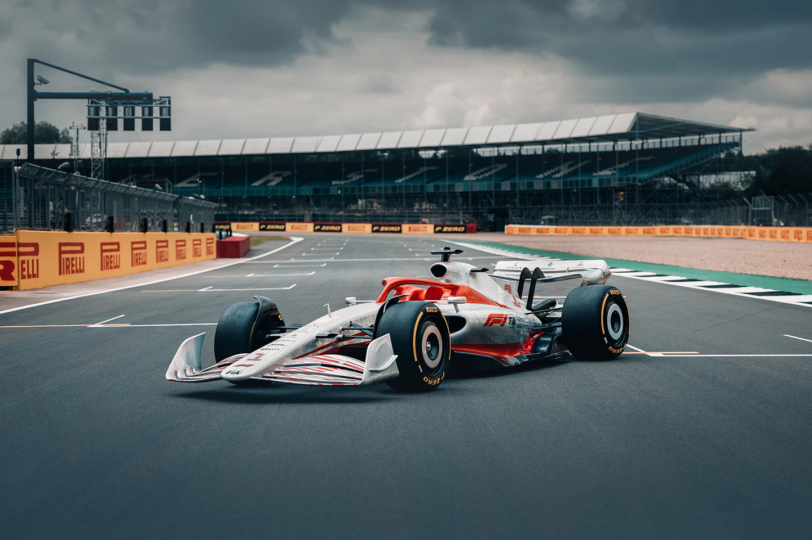
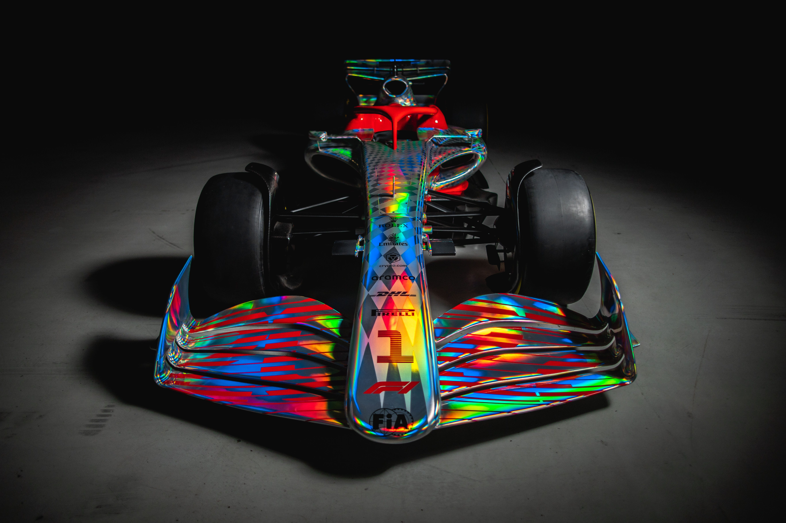
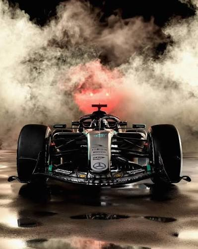

Five racing cars, and the engineering ideas behind them.

The front and rear wings push the car down onto the track. This is called downforce, and it lets the car take corners at very high speed without sliding.
Engineers test the shape of the wings on a computer before building them.
The engine, together with electric motors, gives the car its speed. A good power unit makes the car accelerate quickly out of corners and reach a high top speed.
ICT is used to monitor the engine with hundreds of sensors.
Tyres are the only part of the car that touches the road. Different tyres are used for dry weather, wet weather, and for short or long distances.
Choosing when to change tyres is an important part of the race plan.

Racing brakes can slow the car down in a very short distance. The halo above the cockpit and the strong carbon fibre body protect the driver in a crash.
Safety is just as important as speed in motorsport.

The driver controls the car using a steering wheel with many buttons and a screen. Data from the car is sent to the engineers in the garage during the race.
This is where ICT and motorsport come together, and where I want to work one day.